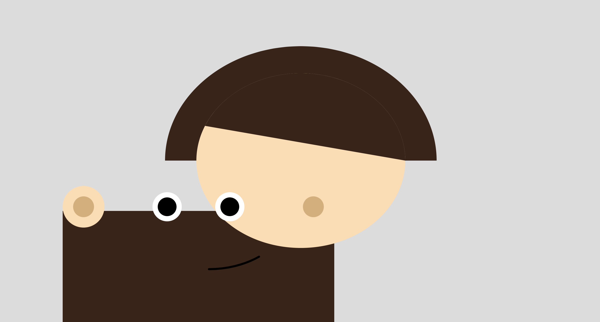

This was one of the first homework activity for P5. I struggled with it initially as I struggled to place each element at the exact coordinates. Then the next setback was that I hardcoded all the coordinates while leaving my canvas at windowWidth and windowHeight. This caused my image to be completely distorted as it was unresponsive. I used Claude to learn and understand how I can make my code responsive.
I used this tutorial to learn how to make the eyes map to the mouse position. Although I learnt a fair bit from this, I encounted a few issues and used Claude to teach myself how to debug and improve the code. As math is not my strong suit, I do want to take more time to understand this concept a little better.
Claude's response: